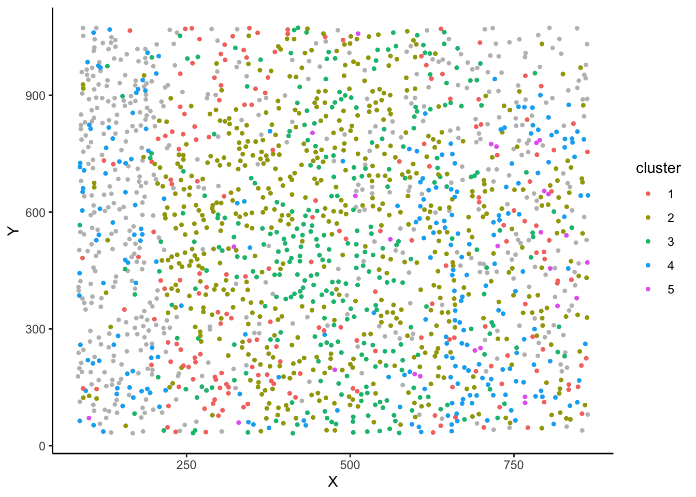
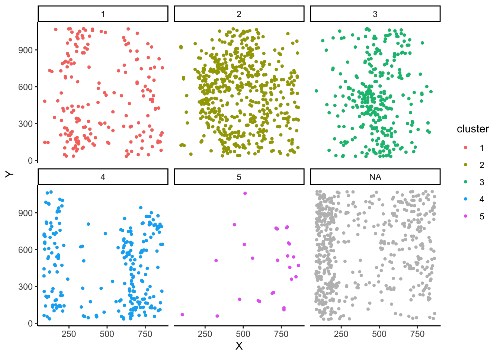
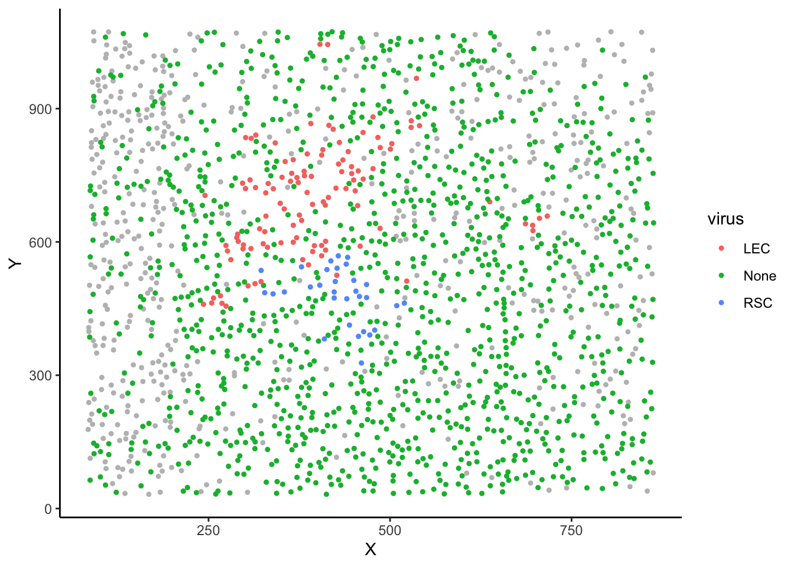
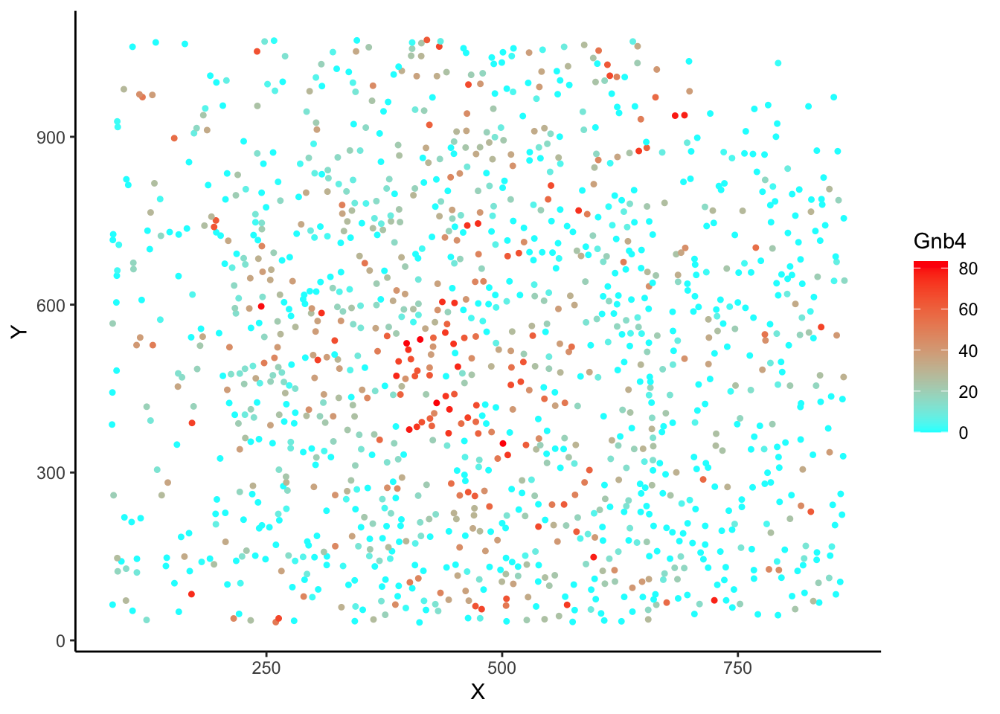
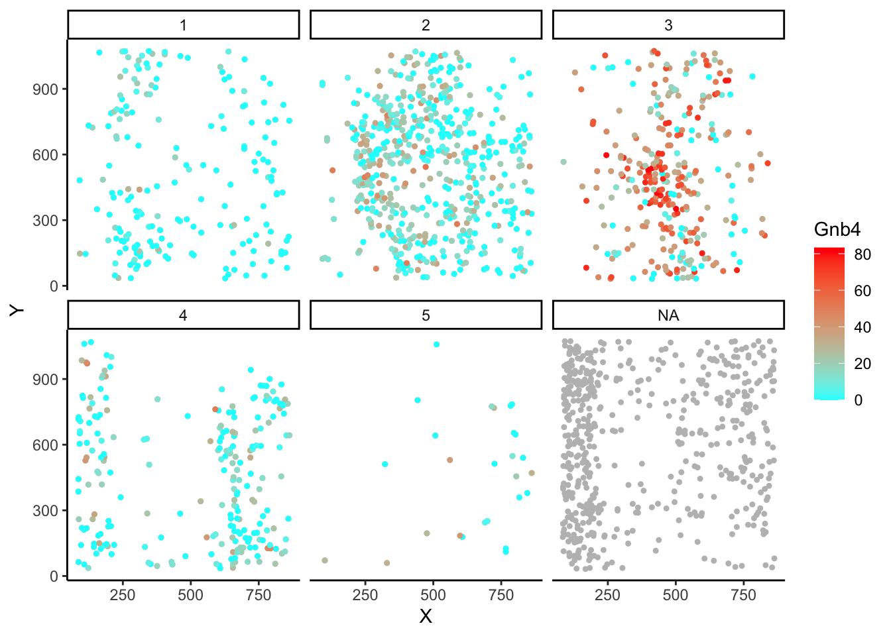

######### STEP 4: PLOTTING #########
### GEOGRAPHIC SPACE with plotSpace()
#plot in space - automatically coloured by cluster
plotSpace(myobj)
#optional args to group by section, or other variable (eg cluster)
plotSpace(myobj, group.by = 'cluster')
#Plot by metadata values
library(dplyr)
Attaching package: 'dplyr'The following objects are masked from 'package:stats':
filter, lagThe following objects are masked from 'package:base':
intersect, setdiff, setequal, unionmyobj@metaData <- mutate(myobj@metaData, virus=ifelse(LEC>3, 'LEC', ifelse(RSC>3, 'RSC', 'None')))
plotSpace(myobj, colour.by = "virus")
#plot in space but change to a gene or metadata value
plotSpace(myobj, colour.by = 'Gnb4', include.fil = F)
#plot in space with separation by cluster (group.by is useful for viewing multiple sections as well)
plotSpace(myobj, group.by = 'cluster', colour.by = 'Gnb4')